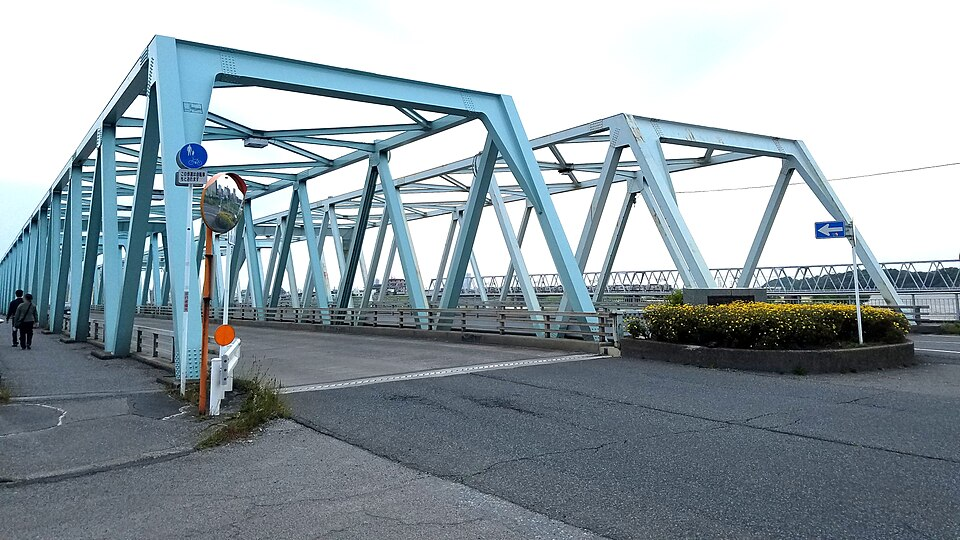

01 · RIVERSIDE
江戸川の河川敷
市川の西側を流れる江戸川。川沿いに出ると空が広く、水面や橋を眺めながら、まちの中とは少し違う開放感を味わえます。散歩や自転車でゆっくり進み、時間とともに変わる川辺の光を楽しむのもおすすめです。
川辺の魅力は、同じ場所でも天気や時間帯によって表情が変わること。橋や水面を眺めながら少し足を止めると、普段のまち歩きとは違う、のびやかな時間が流れます。
見どころ市川橋を含む川辺の景色。晴れた日は、空と川の広がりを感じながら歩けます。
地図で場所を確認